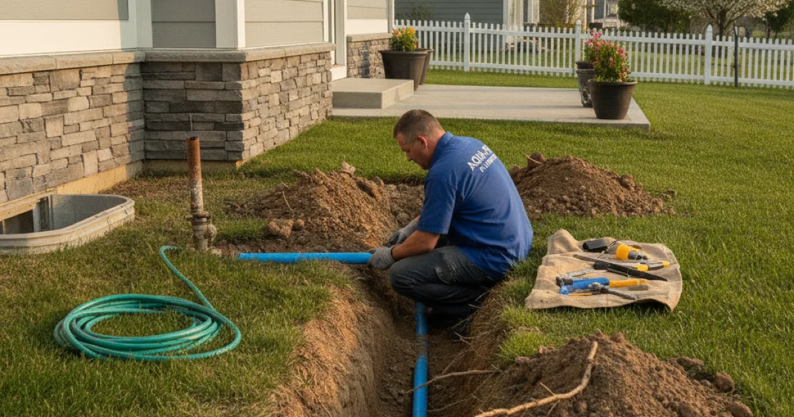

Water Line Replacement in Westchester County, NY
The main line that feeds your home's water can fail with age or damage. Dan's Drains replaces failing water supply lines so you get reliable pressure and clean water back to the house.
- Licensed & Insured
- Same-Day Service Available
- Upfront Pricing
- 15+ Years Local Experience

Need a plumber in Westchester County? We can usually help the same day.
Signs Your Water Line Is Failing
The main supply line runs underground, so problems show up indirectly:
- A sudden or gradual drop in water pressure throughout the house.
- Discolored or dirty water at the tap.
- Wet or unusually green patches in the yard along the line's path.
- An unexplained jump in your water bill.
Any of these is worth checking before the line fails completely.
How We Replace a Water Line
We confirm the line is the problem, plan the route, and replace it with modern pipe rated for underground supply. We work to keep your yard and driveway disruption to a minimum.
If the issue turns out to be a break rather than the whole line, a focused repair of the main line may be all you need.
Talk to a local Westchester County plumber today.
What Affects the Cost
Water line replacement pricing depends on:
- The length and depth of the line.
- What is above it — lawn, driveway, or landscaping.
- The pipe material and connections.
- Access and local requirements.
We give you a clear price before the work begins.
Service Lines in Westchester Homes
Older homes here often have original service lines that have aged for decades underground. As they corrode or crack, pressure drops and water quality can suffer.
Clean, reliable water starts at the main, and the EPA's drinking water resources underscore why a sound supply line matters. We replace failing lines to restore it.
When to Call a Pro
Call us when pressure drops across the house, water looks dirty, or you see wet spots along the line's path. Replacing a failing service line prevents a bigger failure later.
If low pressure is the main symptom, we can start with a full pressure evaluation to confirm the source.
Frequently Asked Questions
How do I know if my main water line is the problem?
Falling pressure throughout the house, discolored water, wet spots in the yard, or a rising bill all point to the service line. We confirm before recommending replacement.
Will you dig up my whole yard?
We plan the route to minimize disruption and only open what we need. We will explain the approach and what to expect before starting.
How long does a water line replacement take?
Often a day or two depending on length, depth, and what is above the line. We give you a realistic timeline with the price.
Can a water line be repaired instead of replaced?
If it is a single break, sometimes yes. If the line is aged and failing along its length, replacement is the lasting fix. We advise honestly.
Why is my water discolored?
Discoloration can come from a corroding service line. Replacing an aged line often restores clean, clear water to the house.
Ready to book? Reach Dan’s Drains for fast, upfront plumbing help.